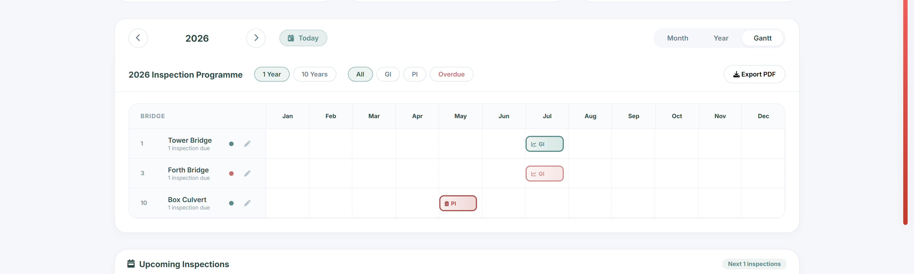
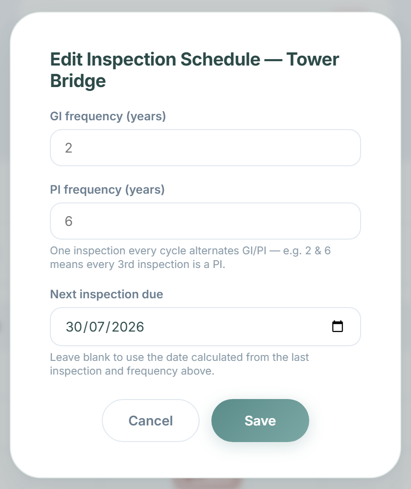
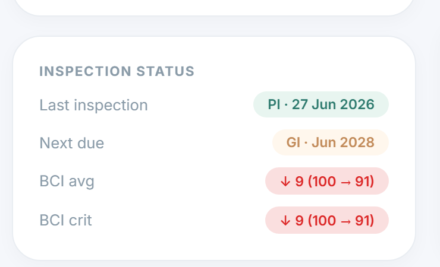

A complete inventory of the frontend and backend functionality powering spanSense — a bridge and structure asset-management platform covering inspections, BCI condition scoring, inspection scheduling, 3D digital twins, and reporting.
spanSense is a multi-page web application for managing the inspection and condition assessment of civil structures (bridges, retaining walls, culverts, footbridges, and sign gantries). It combines a geographic asset map, a field-inspection workflow built around the Bridge Condition Index (BCI), a 3D digital twin viewer, a per-structure inspection scheduler, an engineer review pipeline, and a suite of PDF/Word/Excel reporting tools — on top of an Express + PostgreSQL backend with Supabase-hosted file storage.
9
Frontend pages / modules
~46
Backend API endpoints
9
Core database tables
5
Structure types supported
16
Defect type categories
5×5
Severity × extent scoring grid
GI / PI
Alternating inspection cycle
4
Export formats (PDF/DOCX/XLSX/CSV)
What the platform does, in one paragraph
An inspector logs in, finds a structure on the map, opens the inspection wizard, and logs defects element by element, attaching photos and optionally locating each defect on a 3D model of the structure. The backend computes BCI average and critical scores from the logged defects; those scores flow into the dashboard, the planning calendar (which now projects a single alternating GI/PI schedule per structure, editable per structure), the 3D twin — where the condition panel shows the trend against the previous inspection — and a family of exportable report documents. A submitted inspection enters a review queue that an engineer or admin can approve or reject before it's considered final.
Read this report as…
Section 03 is the backend reference; sections 05–07 are the frontend tour with real screenshots of the current build; section 09 covers the scheduling engine and review pipeline added since the last snapshot; section 10 summarizes everything else that's changed; section 11 lists the technical-debt items worth knowing about before making changes.
Auth model update: session cookie only (httpOnly) — still no JWT or email/SMTP integration anywhere in the codebase. A role field is stored per user, and is now enforced by three routes added since the last report — pending-review, review-decision, and bridge-schedule updates all require engineer or admin. Every other route remains logged-in-or-not; broader role enforcement would still need new middleware.
03 — Backend API Catalog
Endpoints grouped by domain area (approximate count per group):
Nine core tables, plain foreign keys (no ORM-managed relations).
Table
Purpose
users
Accounts, bcrypt password hash, role (admin/engineer/inspector)
bridges
Structure records — location, type, material, BCI snapshot, and (new) per-structure gi_cycle_years / pi_cycle_years / next_inspection_override
inspections
One row per inspection event — type (GI/PI/SI), overall BCI average/critical, review status, reviewed_by, reviewed_at, engineer comments
inspection_spans
Per-span BCI average/critical breakdown within one inspection
defects
Per-element defect record — severity, extent, works-required flag, 3D position, tied to one inspection
defect_photos
Uploaded photo references per defect, stored in Supabase Storage
elements
Standard inspectable-element checklist, keyed by structure type
folders
Per-bridge document folder tree
files
Uploaded documents within a bridge's folder tree
Notable relationship
A defect never outlives the inspection it was logged in — there's no cross-inspection "open until resolved" status anywhere in the schema. A structure's condition history is really a sequence of independent snapshots; anything that reads as "current state" (e.g. twinView's condition panel) is really "as of the most recently selected inspection."
05 — Frontend: Map & Dashboard
Default landing page
Map — the structure hub
An interactive Leaflet map is the app's home screen after login. Structures are plotted with type-coded icon shapes and BCI-condition-coded rings; a sidebar lets the user filter by structure type or condition band, and a fuzzy-search bar (Fuse.js) jumps straight to a named structure. Clicking a marker opens a structure detail modal with photo, BCI score, and buttons for New Inspection, Previous Inspections, and Documents.
Dashboard — portfolio KPIs, now clickable
Every metric card jumps straight to the section it summarizes when clicked (a small chevron makes this discoverable), and the two hardcoded placeholder cards from the previous snapshot ("Upcoming"/"Overdue") have been replaced with live, API-backed figures:
Total Assets and High-Risk Structures — unchanged, still live counts
BCI Average / Critical — a new combined card, portfolio-wide, computed from each structure's latest inspection
Pending Review — replaces the old placeholder cards; jumps to the review queue and now paginates once the list grows past 8 items
The refreshed metrics row — four live, clickable cards, and the Analytics & Insights charts below
06 — Frontend: Database, Planning & twinView
Export & records
Database — bridges, inspections, reports
A three-category export panel (Bridges / Inspections / Reports) with a filterable, paginated, sortable table underneath, and per-column format choice (CSV/JSON/XML for structures; CSV/PDF/XLSX for inspections; PDF/DOCX for reports). Routine "Loaded N records" and "Switched to X" toasts were removed this session — they added noise without adding information.
Rebuilt this session
Planning — a real inspection scheduler
GI and PI no longer recur as two independent series. They now share a single alternating slot — every pi_cycle_years / gi_cycle_years-th occurrence is a PI instead of a GI (2yr/6yr default → every 3rd) — fixing a bug where the old model could project a GI and a PI landing in the same year, or miss a GI for a structure only ever inspected as PI. Frequency and the next-due date are editable per structure; the Gantt view now sits in its own framed card.

Gantt view — GI in teal, PI in red (swapped this session — PI is the more serious type), with an edit pencil per structure

The new per-structure schedule editor
Condition trend, not a snapshot count
twinView — 3D digital twin
The "Inspection status" panel's third stat used to be a raw "Open Defects" count — misleading, since defects have no open/closed lifecycle in the schema, just a per-inspection snapshot. It now shows BCI average and critical trend against the previous inspection instead — a genuinely more useful "is this getting better or worse" signal.

Declining BCI in red with the before → after numbers; improving/stable in green
07 — Frontend: Accounts, Contacts & Inspection
Accounts
Previously showed a hardcoded placeholder name/role/join-date. Now loads the real logged-in user's profile from /api/me — name, role badge, avatar initials, and join date all reflect whoever is actually signed in.
Navbar — role badge & greeting
Two small additions roll out across every page's navbar: the account icon now morphs into a role-specific glyph (magnifying glass for inspector, checked user for engineer, shield for admin) cached in localStorage for an instant repaint on navigation; and map.html carries a "hello, [first name]" pill sourced from the same session profile lookup.
Contacts
A simple contact form/details page — unchanged this cycle.
Inspection (2-step wizard)
Metadata first, then per-span/per-element defect logging with photo attachment and optional 3D-model defect placement. A live "BCI impact preview" panel now recalculates the average-impact delta as Severity/Extent change, before the defect is even saved, and a historical-anomaly check pauses a save when a new rating is a sharp improvement over the element's last recorded condition — both added since the last report.
inspection1 — the review-focused variant
A second inspection-detail layout, used as the deep-link target when an engineer opens "Review & edit" from the dashboard's pending-review queue — same underlying data, laid out for a reviewer skimming a submitted report rather than an inspector filling one in from scratch.
08 — The BCI Condition-Scoring Engine
Every Severity × Extent pair feeds directly into a score — no manual formula, no spreadsheet.
Term
Meaning
BCI avg
The overall average condition across all elements in an inspection
BCI crit
The score of the single worst-condition element — the one that actually drives risk decisions
Severity (1–5)
Minor · Moderate · Severe · Critical · Emergency
Extent (A–E)
How much of the element is affected, isolated to extensive
Five condition bands
Both BCI avg and BCI crit fall into the same five bands used everywhere in the app — the dashboard's distribution chart, the map's marker rings, and every report document: Critical (0–39), Poor (40–64), Fair (65–79), Good (80–89), Very Good (90–100).
What's new: a live impact preview
Inside the Add Defect modal, an inline panel now shows the projected BCI average before/after impact as Severity and Extent are changed, so an inspector sees the consequence of a rating before committing it — previously the score only updated after the defect was saved.
09 — Inspection Scheduling & Review Pipeline
Two features built this session, both new end-to-end: a real scheduling engine and an approval workflow.
Scheduling engine
Replaces three separately hand-rolled recurrence calculations (the upcoming-inspections list, the single-year calendar, and the multi-year Gantt view) with one shared projector. GI and PI share a single alternating slot rather than recurring independently — a structure's own gi_cycle_years / pi_cycle_years (defaulting to 2/6) determine the cadence, and every pi_cycle_years/gi_cycle_years-th occurrence becomes a PI. A next_inspection_override date, editable from Planning, rebases the entire future sequence onto a manually-set date without needing to touch history.
Endpoint
Behaviour
GET /api/bridges
Now also returns each structure's cycle-years and override columns
PATCH /api/bridges/:id/schedule
Updates cycle-years and override date — engineer/admin only
GET /api/twin/:id
"Next due" now uses the same shared alternating-sequence logic, fixing a case where a structure with only PI history was projected 2027-PI instead of the correct 2023-GI
Review pipeline
Submitted inspections now carry a status (submitted / approved / rejected), reviewed_by, and engineer comments. The dashboard's Pending Review section — search, type filter, critical-only toggle, and pagination — surfaces anything awaiting a decision to engineer/admin accounts, with a modal that deep-links straight into the full inspection editor for a closer look before approving or rejecting.
10 — Recent Platform Changes (since 3 July)
A condensed changelog of everything covered in more detail elsewhere in this report.
Dashboard metrics rebuilt — two hardcoded placeholder cards replaced with live BCI average/critical and pending-review figures, every card now clickable
Planning scheduling engine — GI/PI unified into one alternating sequence; per-structure frequency and next-due override, editable from a new modal
twinView BCI trend — replaced a not-very-meaningful "open defects" count with a trend comparison against the previous inspection
Pending-review workflow — dashboard section, search/filter/pagination, and an approve/reject modal deep-linking into the full editor
Role badge & user greeting — navbar account icon reflects role; map.html greets the signed-in user by first name
Accounts page — now loads the real signed-in user's profile instead of a hardcoded placeholder
Live BCI impact preview + historical-anomaly check — added to the Add Defect modal
Dark-mode contrast pass — several borders (Gantt grid lines, section headers, database table framing) were left at their light-mode color and read as bright white hairlines against dark backgrounds; corrected across dashboard, planning, and database
Housekeeping — removed two orphaned legacy files (an early BCI prototype and an untracked generator script) and several unused dependencies from package.json; added a project README
11 — Notable Observations & Recommendations
Resolved since the last report
Orphaned legacy files — the early BCI prototype and an untracked generator script are both gone
Unused dependencies — sqlite3, canvas, fs-extra, and the static-map packages have been removed from package.json
Binary authorization — partially addressed: three routes (pending-review, review-decision, schedule-update) now require engineer/admin specifically, rather than just "logged in"
Still worth knowing about
Duplicated report/modal logic between map/bcirep.js and map.js — both still define overlapping modal-data helpers
Seed credentials are hardcoded — the default account (admin / admin123) is created and logged to console on first boot; worth rotating before any real deployment
Session store is in-memory — express-session's MemoryStore is fine for local development but will leak memory and doesn't scale past one process, as the server's own boot log already warns
No automated test suite — this session's changes were verified with ad hoc Playwright scripts rather than a committed test suite; a real one is the single biggest gap between "working" and "trustworthy"
Most routes remain binary — beyond the three now-gated routes, authorization elsewhere is still just "logged in or not"
Strengths worth preserving
Inspection saves are properly transactional — a failed write can't leave a half-saved inspection
The BCI scoring engine is cleanly parameterized per structure type, making it straightforward to onboard a new asset type
The new scheduling engine is a single shared function reused by three different views instead of three parallel implementations — the kind of consolidation the previous report's technical-debt section was asking for
Client-side report generation (PDF/DOCX/XLSX) means no server-side rendering dependency or extra infrastructure to operate
This report was generated by inspecting the codebase directly (routes, schema, and page markup/scripts) and by driving the running application with Playwright for real screenshots, rather than from documentation, and reflects the repository state as of the date on the cover page.